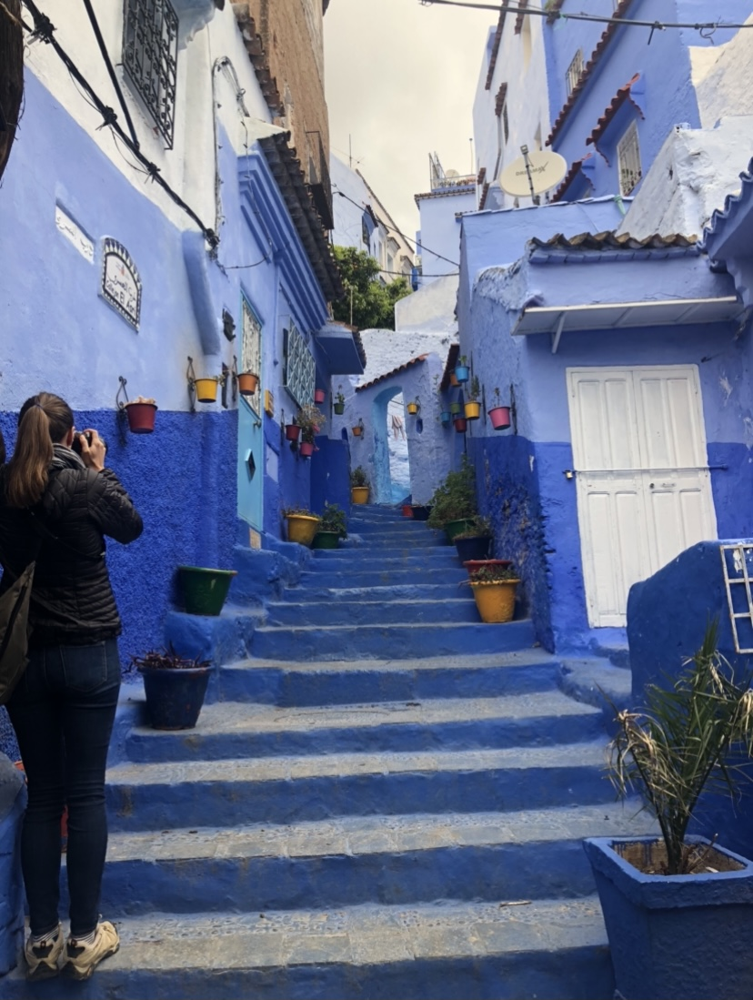

Places where riding a camel over dunes while the sun shimmers dramatically on the horizon is not an unusual thing. Where tagines come spiked with saffron and argan, carpet merchants haggle in the bazaars and Berber tribesmen herd goats on the slopes of the High Atlas Mountains.
Between tradition and modernity, Marrakech is the promise of unequalled sensations. Strolling the Jemaa El-Fna square and the souks with their shimmering colours and oriental smells, the red city offers you a complete change of scenery. Horse-drawn carriage rides, sunny terraces, travelling artists and other day and night activities will give a tates of wishful comeback.

Chefchaouen. Hahaha, Can you imagine that the airbnb I lived is right beside the world-famous blue gate？